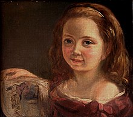
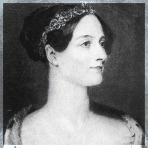
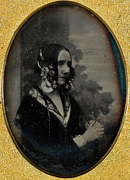
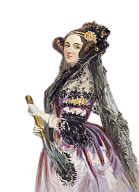
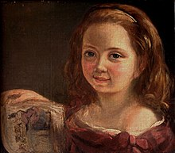
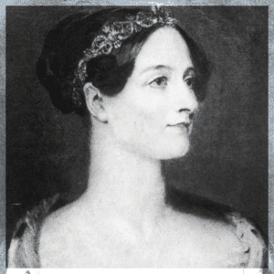
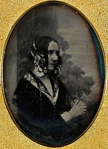
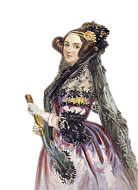

Quem foi
Augusta Ada King, a Condessa de Lovelace, mais conhecida como Ada Lovelace, foi uma matemática e escritora. Ela é conhecida como a primeira programadora, ao reconhecer que a máquina analítica de Charles Babbage poderia ser utilizada para aplicações mais genéricas que apenas cálculos.
Ada Lovelace era filha do famoso poeta Lord Byron, e da matemática Lady Byron. Lord Byron se separou de sua mulher quando Ada tinha apenas 1 mês de idade, e deixou o país, morrendo quando Ada tinha 8 anos de idade, sem conhecer seu pai. Sua mãe alimentou o interesse de Ada em matemática e lógica, e através de seus estudos ela desenvolveu uma amizade e relação de trabalho com o matemático Charles Babbage, conhecido como o "pai dos computadores".
Contribuição para a tecnologia
Em seu trabalho com Charles Babbage, Ada Lovelace ficou fascinada com as calculadoras mecâncias que ele havia inventado, e ao ajudar a traduzir o artigo do matemático italiano Luigi Manabrea sobre a mais nova invenção de Babbage, sua máquina analítica, Ada adicionou notas sobre o funcionamento da máquina, explicando como era diferente da calculadora mecância de Babbage, coisa que muitos outros cientistas não compreendiam.
Em suas notas do artigo, que eram maiores que o artigo em si, Ada descreve um método de calcular a sequência de números de Bernoulli, o que é hoje considerado por muitos o primeiro programa de computador, mesmo que a máquina em si nunca tenha sido construída, então o código nunca foi testado na máquina.
Galeria
 






